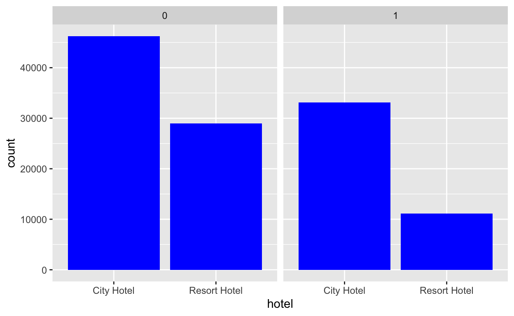
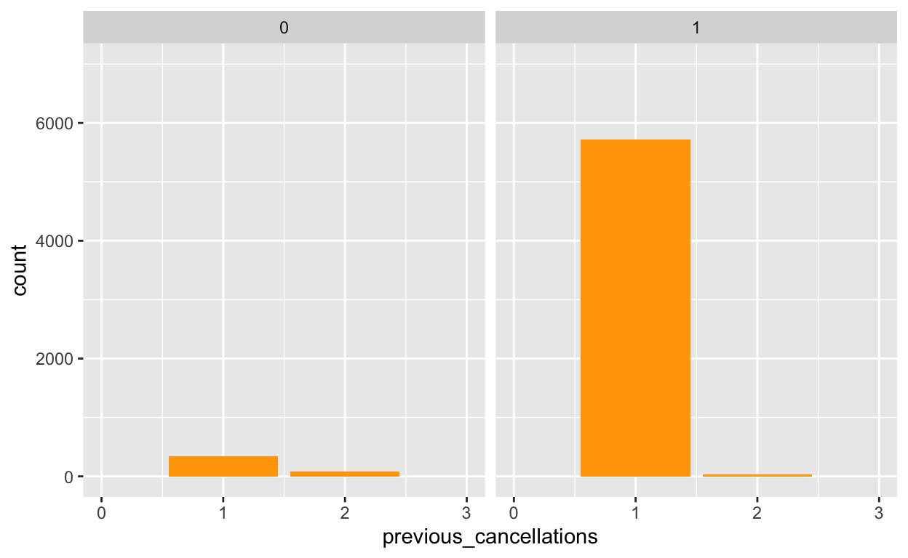
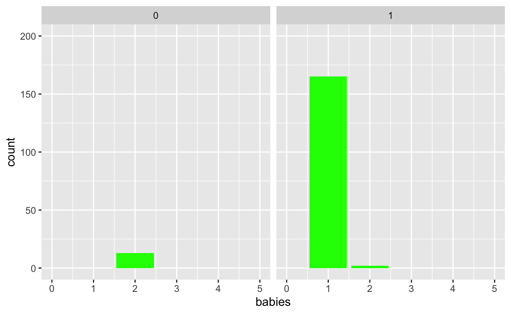
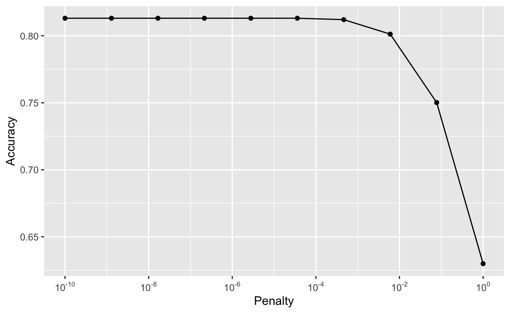
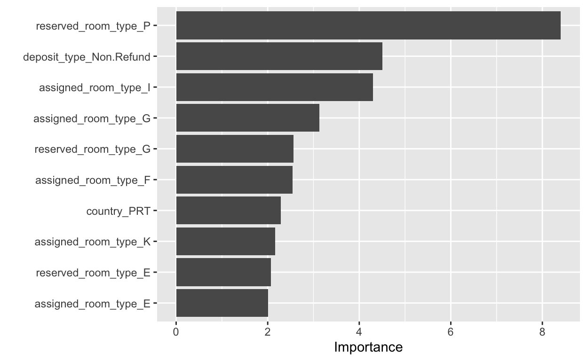

theme_set(theme_minimal())
hotels <- readr::read_csv('https://raw.githubusercontent.com/rfordatascience/tidytuesday/master/data/2020/2020-02-11/hotels.csv')
Setting Up Git and Github in RStudio
Here is my Github link.
Creating a Website
- Website Link
- Here is the link to my website.
Machine Learning review and intro to tidymodels
- Read about the hotel booking data,
hotels, on the Tidy Tuesday page it came from. There is also a link to an article from the original authors. The outcome we will be predicting is calledis_canceled.
- Without doing any analysis, what are some variables you think might be predictive and why?
- There are a few variables that could be predictive, however
previous_cancellationsdefinitely stands out. It is reasonable to assume that if someone has canceled before, they could possiblky cancel again.booking_changescould also be predictive, as someone who makes a bunch of changes is likely to be unsure about their booking and one of the changes that they could make could be canceling the stay. Finally, a third variable that could be predictive iscustomer_type, as the type of customer could make it easier or more difficult to cancel the stay.
- There are a few variables that could be predictive, however
- What are some problems that might exist with the data? You might think about how it was collected and who did the collecting.
- One issue with the way that the data was collected is that there are almost twice as many observations for the city hotel as the resort hotel, which could introduce bias into the data. The data for canceled bookings could also be less accurate, as variables such as adults, children, and babies could be inaccurate due to the family or group never showing up. Therefore, there could be bias towards non-canceled bookings based on how the data was collected. The
reservation_statusvariable is also a bit redundant, as it states whether someone canceled their reservation or not, which is already given in theis_canceledvariable. Finally, each reservation is missing a unique identifier, so
- One issue with the way that the data was collected is that there are almost twice as many observations for the city hotel as the resort hotel, which could introduce bias into the data. The data for canceled bookings could also be less accurate, as variables such as adults, children, and babies could be inaccurate due to the family or group never showing up. Therefore, there could be bias towards non-canceled bookings based on how the data was collected. The
- If we construct a model, what type of conclusions will be able to draw from it?
- If we construct a model, the type of conclusions that well be able to draw from it are likely to be which variables are most important to determine the likelihood of cancellation. This could easily be achieved using the LASSO technique to analyze variable importance.
- Create some exploratory plots or table summaries of the data, concentrating most on relationships with the response variable. Keep in mind the response variable is numeric, 0 or 1. You may want to make it categorical (you also may not). Be sure to also examine missing values or other interesting values.
hotels %>%
ggplot(aes(x = hotel)) +
geom_bar(fill = "blue") +
facet_wrap(vars(is_canceled))

hotels %>%
ggplot(aes(x = customer_type)) +
geom_bar(fill = "red") +
facet_wrap(vars(is_canceled))
hotels %>%
ggplot(aes(x = previous_cancellations)) +
geom_bar(fill = "orange") +
xlim(0,3) +
ylim(0,7000) +
facet_wrap(vars(is_canceled))

hotels %>%
ggplot(aes(x = adults)) +
geom_bar(fill = "green") +
xlim(0,5) +
facet_wrap(vars(is_canceled))
hotels %>%
ggplot(aes(x = babies)) +
geom_bar(fill = "green") +
xlim(0,5) +
ylim(0,200) +
facet_wrap(vars(is_canceled))

- First, we will do a couple things to get the data ready, including making the outcome a factor (needs to be that way for logistic regression), removing the year variable and some reservation status variables, and removing missing values (not NULLs but true missing values). Split the data into a training and test set, stratifying on the outcome variable,
is_canceled. Since we have a lot of data, were going to split the data 50/50 between training and test. I have alreadyset.seed()for you. Be sure to usehotels_modin the splitting.
hotels_mod <- hotels %>%
mutate(is_canceled = as.factor(is_canceled)) %>%
mutate(across(where(is.character), as.factor)) %>%
select(-arrival_date_year,
-reservation_status,
-reservation_status_date) %>%
add_n_miss() %>%
filter(n_miss_all == 0) %>%
select(-n_miss_all)
set.seed(494)
hotel_split <- initial_split(hotels_mod,
prop = 0.5)
hotel_train <- training(hotel_split)
hotel_test <- testing(hotel_split)
- Pre-processing
hotel_recipe <- recipe(is_canceled ~.,
data = hotel_train) %>%
step_mutate_at(children, babies, previous_cancellations,
fn = ~ifelse(. > 0, 1, 0)) %>%
step_mutate_at(agent, company,
fn = ~ifelse(. == "NULL", 1, 0)) %>%
step_mutate(country = fct_lump_n(country, 5)) %>%
step_normalize(all_numeric()) %>%
step_dummy(all_nominal(), -all_outcomes())
hotel_recipe %>%
prep(hotel_train) %>%
juice()
# A tibble: 59,693 x 76
lead_time arrival_date_week_ arrival_date_day_ stays_in_weekend_
<dbl> <dbl> <dbl> <dbl>
1 -0.907 -0.0141 -1.69 -0.933
2 -0.841 -0.0141 -1.69 -0.933
3 -0.176 -0.0141 -1.69 -0.933
4 -0.804 -0.0141 -1.69 -0.933
5 -0.335 -0.0141 -1.69 -0.933
6 -0.907 -0.0141 -1.69 -0.933
7 -0.626 -0.0141 -1.69 0.0761
8 -0.298 -0.0141 -1.69 1.09
9 -0.298 -0.0141 -1.69 1.09
10 0.217 -0.0141 -1.69 1.09
# with 59,683 more rows, and 72 more variables:
# stays_in_week_nights <dbl>, adults <dbl>, children <dbl>,
# babies <dbl>, is_repeated_guest <dbl>,
# previous_cancellations <dbl>,
# previous_bookings_not_canceled <dbl>, booking_changes <dbl>,
# agent <dbl>, company <dbl>, days_in_waiting_list <dbl>,
# adr <dbl>, required_car_parking_spaces <dbl>,
# total_of_special_requests <dbl>, is_canceled <fct>,
# hotel_Resort.Hotel <dbl>, arrival_date_month_August <dbl>,
# arrival_date_month_December <dbl>,
# arrival_date_month_February <dbl>,
# arrival_date_month_January <dbl>, arrival_date_month_July <dbl>,
# arrival_date_month_June <dbl>, arrival_date_month_March <dbl>,
# arrival_date_month_May <dbl>, arrival_date_month_November <dbl>,
# arrival_date_month_October <dbl>,
# arrival_date_month_September <dbl>, meal_FB <dbl>, meal_HB <dbl>,
# meal_SC <dbl>, meal_Undefined <dbl>, country_ESP <dbl>,
# country_FRA <dbl>, country_GBR <dbl>, country_PRT <dbl>,
# country_Other <dbl>, market_segment_Complementary <dbl>,
# market_segment_Corporate <dbl>, market_segment_Direct <dbl>,
# market_segment_Groups <dbl>, market_segment_Offline.TA.TO <dbl>,
# market_segment_Online.TA <dbl>, market_segment_Undefined <dbl>,
# distribution_channel_Direct <dbl>,
# distribution_channel_GDS <dbl>, distribution_channel_TA.TO <dbl>,
# distribution_channel_Undefined <dbl>, reserved_room_type_B <dbl>,
# reserved_room_type_C <dbl>, reserved_room_type_D <dbl>,
# reserved_room_type_E <dbl>, reserved_room_type_F <dbl>,
# reserved_room_type_G <dbl>, reserved_room_type_H <dbl>,
# reserved_room_type_L <dbl>, reserved_room_type_P <dbl>,
# assigned_room_type_B <dbl>, assigned_room_type_C <dbl>,
# assigned_room_type_D <dbl>, assigned_room_type_E <dbl>,
# assigned_room_type_F <dbl>, assigned_room_type_G <dbl>,
# assigned_room_type_H <dbl>, assigned_room_type_I <dbl>,
# assigned_room_type_K <dbl>, assigned_room_type_L <dbl>,
# assigned_room_type_P <dbl>, deposit_type_Non.Refund <dbl>,
# deposit_type_Refundable <dbl>, customer_type_Group <dbl>,
# customer_type_Transient <dbl>,
# customer_type_Transient.Party <dbl>- LASSO model and workflow
- We would want to use a LASSO workflow because LASSO uses an importance coefficient which reduces to zero when the variable is deemed to be not predictive of our outcome variable. This will allow us to reduce the size of our dataset and only focus on our indicator variables that matter.
lasso_hotel_mod <- logistic_reg(penalty = tune()) %>%
set_engine("glmnet") %>%
set_mode("classification")
hotel_workflow <- workflow() %>%
add_recipe(hotel_recipe) %>%
add_model(lasso_hotel_mod)
lasso_hotel_fit <- hotel_workflow %>%
fit(data = hotel_train)
lasso_hotel_fit
Workflow [trained]
Preprocessor: Recipe
Model: logistic_reg()
Preprocessor
5 Recipe Steps
step_mutate_at()
step_mutate_at()
step_mutate()
step_normalize()
step_dummy()
Model
Call: glmnet::glmnet(x = maybe_matrix(x), y = y, family = "binomial")
Df %Dev Lambda
1 0 0.00 0.232200
2 1 2.92 0.211600
3 1 5.27 0.192800
4 1 7.21 0.175700
5 1 8.83 0.160100
6 1 10.20 0.145900
7 1 11.37 0.132900
8 1 12.38 0.121100
9 2 13.31 0.110300
10 2 14.35 0.100500
11 2 15.26 0.091600
12 3 16.15 0.083460
13 5 17.27 0.076050
14 5 18.47 0.069290
15 7 19.65 0.063140
16 8 21.74 0.057530
17 8 23.58 0.052420
18 8 25.21 0.047760
19 9 26.70 0.043520
20 10 28.09 0.039650
21 11 29.35 0.036130
22 11 30.48 0.032920
23 12 31.47 0.029990
24 13 32.41 0.027330
25 15 33.25 0.024900
26 15 34.02 0.022690
27 15 34.70 0.020670
28 15 35.31 0.018840
29 17 35.86 0.017160
30 20 36.40 0.015640
31 22 36.88 0.014250
32 22 37.33 0.012980
33 24 37.72 0.011830
34 24 38.07 0.010780
35 25 38.37 0.009822
36 28 38.67 0.008949
37 32 38.97 0.008154
38 33 39.28 0.007430
39 34 39.56 0.006770
40 36 39.82 0.006168
41 41 40.07 0.005620
42 42 40.31 0.005121
43 43 40.52 0.004666
44 45 40.71 0.004252
45 46 40.91 0.003874
46 46 41.08 0.003530
...
and 40 more lines.- Tune and fit the model
set.seed(494)
hotel_cv <- vfold_cv(hotel_train, v = 5)
hotel_lasso_pen_grid <- grid_regular(penalty(), levels = 10)
hotel_lasso_tune <- hotel_workflow %>%
tune_grid(resamples = hotel_cv,
grid = hotel_lasso_pen_grid)
hotel_lasso_tune %>%
collect_metrics() %>%
filter(.metric == "accuracy")
# A tibble: 10 x 7
penalty .metric .estimator mean n std_err .config
<dbl> <chr> <chr> <dbl> <int> <dbl> <chr>
1 1.00e-10 accuracy binary 0.813 5 0.00127 Preprocessor1_
2 1.29e- 9 accuracy binary 0.813 5 0.00127 Preprocessor1_
3 1.67e- 8 accuracy binary 0.813 5 0.00127 Preprocessor1_
4 2.15e- 7 accuracy binary 0.813 5 0.00127 Preprocessor1_
5 2.78e- 6 accuracy binary 0.813 5 0.00127 Preprocessor1_
6 3.59e- 5 accuracy binary 0.813 5 0.00127 Preprocessor1_
7 4.64e- 4 accuracy binary 0.812 5 0.00136 Preprocessor1_
8 5.99e- 3 accuracy binary 0.801 5 0.00185 Preprocessor1_
9 7.74e- 2 accuracy binary 0.750 5 0.00236 Preprocessor1_
10 1.00e+ 0 accuracy binary 0.630 5 0.00112 Preprocessor1_hotel_lasso_tune %>%
collect_metrics() %>%
filter(.metric == "accuracy") %>%
ggplot(aes(x = penalty, y = mean)) +
geom_point() +
geom_line() +
scale_x_log10(
breaks = scales::trans_breaks("log10", function(x) 10^x),
labels = scales::trans_format("log10",scales::math_format(10^.x))) +
labs(x = "Penalty",
y = "Accuracy")

best_param <- hotel_lasso_tune %>%
select_best(metric = "accuracy")
hotel_lasso_final_workflow <- hotel_workflow %>%
finalize_workflow(best_param)
hotel_lasso_final_mod <- hotel_lasso_final_workflow %>%
fit(data = hotel_train)
hotel_lasso_final_mod %>%
pull_workflow_fit() %>%
tidy()
# A tibble: 76 x 3
term estimate penalty
<chr> <dbl> <dbl>
1 (Intercept) -2.86 0.0000000001
2 lead_time 0.600 0.0000000001
3 arrival_date_week_number -0.196 0.0000000001
4 arrival_date_day_of_month 0.0219 0.0000000001
5 stays_in_weekend_nights 0.0952 0.0000000001
6 stays_in_week_nights 0.137 0.0000000001
7 adults 0.0964 0.0000000001
8 children 0.0707 0.0000000001
9 babies 0.0299 0.0000000001
10 is_repeated_guest -0.316 0.0000000001
# with 66 more rows- Some of the coefficients are zero, signifying that those predictor variables are not a factor in our LASSO model.
- Variable Importance Graph
hotel_lasso_final_mod %>%
pull_workflow_fit() %>%
vip()

- It is unsurprising that the type of room reserved is the most important variable. It can explain a possible hypothesis that the majority of cancellations come when someone in a group drops out of a reservation. The importance of the non-refundable deposit type is also unsurprising because putting down a non-refundable deposit will most likely influence someone to not cancel their reservation.
hotel_lasso_test <- hotel_lasso_final_workflow %>%
last_fit(hotel_split)
hotel_lasso_test %>%
collect_metrics()
# A tibble: 2 x 4
.metric .estimator .estimate .config
<chr> <chr> <dbl> <chr>
1 accuracy binary 0.814 Preprocessor1_Model1
2 roc_auc binary 0.895 Preprocessor1_Model1- The accuracy estimate for the test data is slightly higher than for the cross-validated data.
preds <- collect_predictions(hotel_lasso_test)
preds %>%
conf_mat(.pred_class, is_canceled)
Truth
Prediction 0 1
0 34225 3340
1 7782 14346- Sensitivity: \(\frac{34492}{34492+8004} = 0.81165\)
- Specificity: \(\frac{14032}{14032 + 3165} = 0.815956\)
preds %>%
ggplot(aes(x = .pred_1, fill = is_canceled)) +
geom_density(alpha = 0.5, color = NA)

- For an accuracy close to 1, the plot would have almost no overlap at all, as the true positive and true negative rates would each be close to 1.
- If we want to have a higher true positive rate, we should make the cutoff higher than 0.5, as only including predictions that are more likely to be canceled would filter out predicitions that were somewhat likely (i.e.50%-60% likely) to be canceled that ended up not being canceled.
- If the true positive rate increases, the true negative rate should increase as well, because by increasing the true positive rate, we are eliminating incorrect predictions. Eliminating incorrect predictions will drive down the false negative rate.
- Lets say that this model is going to be applied to bookings 14 days in advance of their arrival at each hotel, and someone who works for the hotel will make a phone call to the person who made the booking. During this phone call, they will try to assure that the person will be keeping their reservation or that they will be canceling in which case they can do that now and still have time to fill the room. How should the hotel go about deciding who to call? How could they measure whether it was worth the effort to do the calling? Can you think of another way they might use the model?
- The hotel should first call people who are in room type P, as room type P is the most important variable when it comes to predicting whether a reservation will be canceled or not. The hotel should also look at the type of deposit that the reservation maker put down, as that is also very predictive of whether the reservation will be canceled or not. The way that they could measure whether the calls were worth it or not could be by looking at how many cancellations were discovered based on the calls versus the total number of cancellations. They could also observe how many reservations were made for the rooms after they were canceled as a result of the calls. Another way that they could use the model is by looking at the rooms that are canceled the most and making deposits on those rooms non-refundable.
- How might you go about questioning and evaluating the model in terms of fairness? Are there any questions you would like to ask of the people who collected the data?